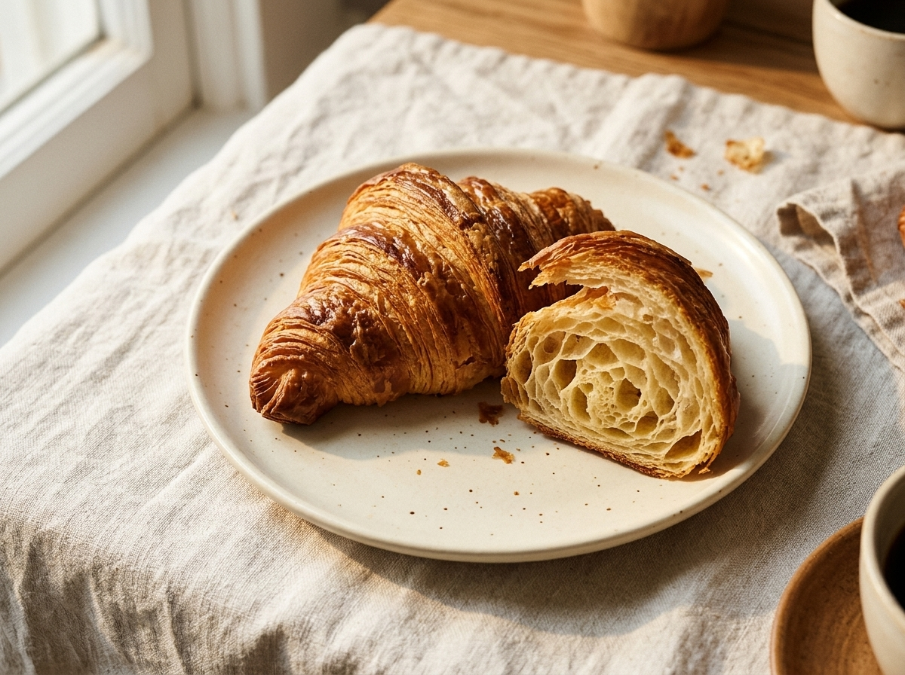

ViennoiserieCultured Butter Croissant
$5.25Three-day cold-fermented dough rolled into crisp, shattering layers with an open honeycomb center.
Ingredients: Unbleached pastry flour, 84% Normandy-style cultured butter, whole milk, wild levain, raw cane sugar, sea salt.
- Vegetarian
- Wheat & Dairy
Batch times: 7:00 AM & 10:30 AM